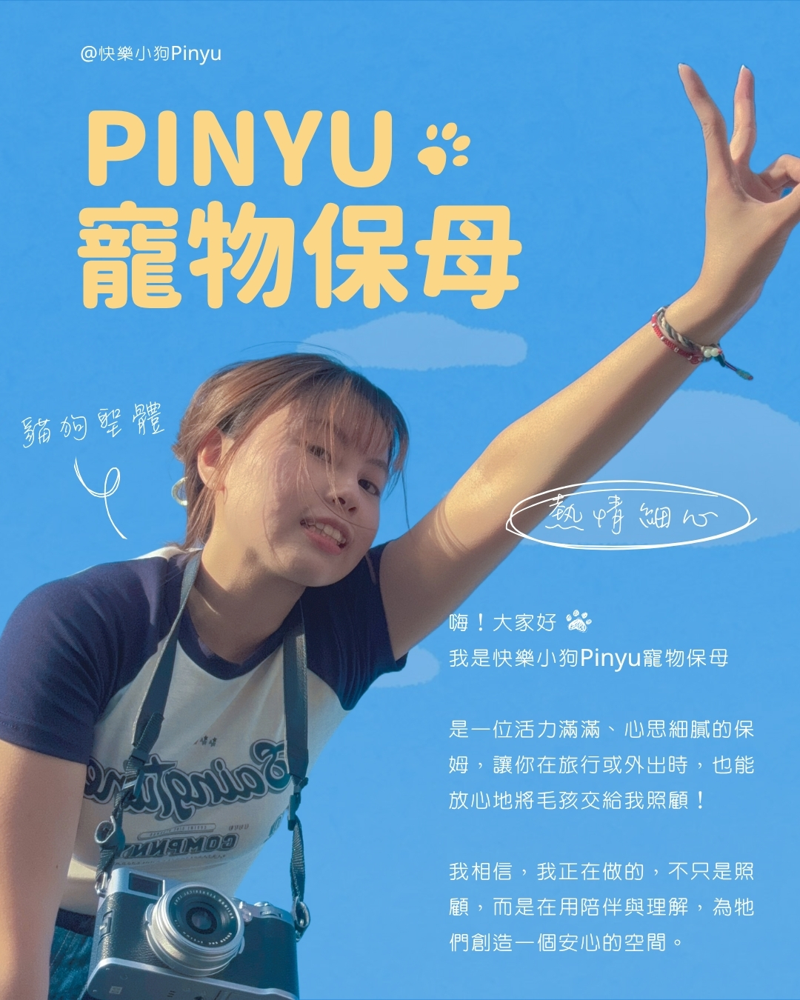

先觀察，再靠近
怕生、慢熟或躲起來都不是「不乖」。我會先觀察牠的呼吸、姿勢、距離與日常習慣，再決定怎麼互動。

快樂小狗 Pinyu 到府寵物保姆安心、透明，也尊重毛孩的步調 先評估看看第一次把毛孩和家裡的鑰匙交給原本不認識的人，本來就會有很多擔心。從你開始詢問，我會把流程、價格、家訪與照顧方式說清楚；正式服務時，也會用照片、影片和文字，讓你知道毛孩現在過得怎麼樣。
餵飯、鏟砂與陪玩是基本；更重要的是看懂毛孩當下的狀態，知道什麼時候可以靠近，也知道什麼時候應該先留一點空間。
怕生、慢熟或躲起來都不是「不乖」。我會先觀察牠的呼吸、姿勢、距離與日常習慣，再決定怎麼互動。
回報很重要，但毛孩的感受更重要。不強迫親近，也不會為了拍到好看的畫面，打亂牠原本安心的節奏。
飲食、飲水、排泄、精神或環境有需要注意的變化，會在服務中清楚說明，必要時立即和你討論下一步。
每隻毛孩需要的距離都不一樣。有人一開門就來迎接，也有人要先在床底偷偷看很久；我會照牠習慣的方式，把該做的事情安靜做好，讓信任慢慢發生。
我是一位活力滿滿、但照顧時會把步調放慢的保姆。希望你感受到的不是一套冷冰冰的標準作業，而是每個重要細節都有被看見。
看看 Instagram 的日常與真實案例走進不同家庭，陪伴過不同個性與需求的毛孩。
持續學習照護、行為觀察與相關知識。
重視異常辨識、即時通報與正確的緊急處置原則。
把飲食、飲水、排泄、精神與互動狀況說清楚。
先確認環境、動線、照顧細節與雙方合作方式。
不套公式，依每隻毛孩的狀態與界線調整。
只呈現飼主明確同意公開的內容；公開名稱會依授權設定顯示，其他個人資料不會出現在這裡。
有時是一張回家後的照片、一句「牠今天看起來很放鬆」，或毛孩終於願意自己走近一點。這些片刻會在取得公開同意後，慢慢收進這面回憶牆。
提供日期、地區、毛孩數量與大概照顧內容。
先判斷是否能安排；超出 Pinyu 優先範圍仍可協助詢問合作保姆。
了解毛孩、環境、動線、用品位置與照顧習慣。
把服務內容、費用、取消與臨時狀況的處理方式說清楚。
依約照顧，透過照片、影片與文字回報當次狀況。
再次確認毛孩、環境、門窗、門鎖與用品狀態。
留下客觀紀錄與後續照護提醒，但不以保姆意見取代獸醫診斷。
以下為 2026 年 7 月新客基準。實際費用仍會依毛孩數量、照顧難度、日期、距離與保姆安排評估；公開價格不等於尚未評估就保證承接。
適合單純餵食、簡單清潔與狀態回報。
有較多照顧項目，或需要多一點互動與整理。
需要完整照顧、互動與環境整理的家庭。
適合敏感慢熟、需要較長適應或細緻陪伴的毛孩。
先提供概略需求，我會確認日期、距離、毛孩狀況與照顧內容，再告訴你下一步。送出初步需求不代表訂單成立，也不會直接要求完整地址或敏感資料。
● 為必填。這裡不要求完整地址、電話或身分資料；確認可承接後才進入下一步。